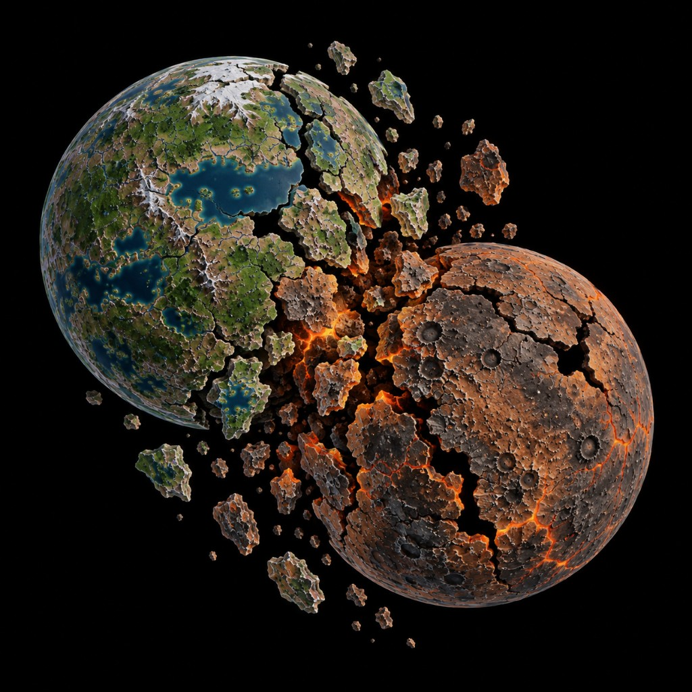

Collision in Claiming Cosmos: two planets in mid-impact, rifts you can fly through, and a debris field between worlds.

Two worlds missed the miss. The green one still has lakes that spill into black; the brown one is magma and dust. Through the big cracks you can see stars — and a hull can follow that light into the interior.
Voidships and Landers use the rifts as highways from open space into each planet. Enclosed lakes that never open stay Harbor water. Fight the debris field for the crossing, then hold a rim Starport or a lakeside Harbor.
See also: Comet's Pass · Verners System · play Claiming Cosmos free